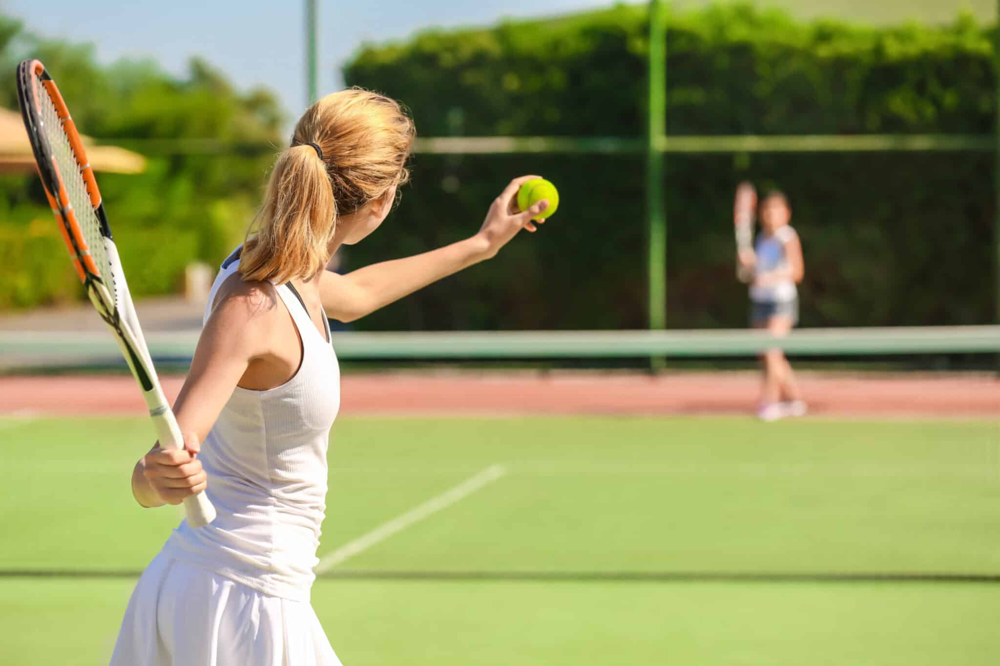

Table of Contents
What Is Tennis?
Highlight Video
Learn Tennis Swings
Dominance in Tennis

What Is Tennis?
Highlight Video
Learn Tennis Swings
Dominance in Tennis

Tennis is a racket sport that is played either individually against a single opponent (singles) or between two teams of two players each (doubles). Each player uses a Tennis racket strung with a cord to strike a hollow rubber ball covered with felt over or around a net and into the opponent's court. The object is to manoeuvre the ball in such a way that the opponent is not able to play a valid return. If a player is unable to return the ball successfully, the opponent scores a point.
Tennis can be played by anyone who can hold a racket, including wheelchair users, and is played by people at every level of society and across all ages. The original forms of Tennis developed in France during the late Middle Ages. The modern form of Tennis originated in Birmingham, England, in the late 19th century as lawn Tennis. It had close connections to various field (lawn) games such as croquet and bowls as well as to the older racket sport today called real Tennis.
The rules of modern Tennis have changed little since the 1890s. The two exceptions being the server needing to have one foot on the ground at all times prior to 1961, and the adoption of the tiebreak in the 1970s. A recent addition to professional Tennis has been the adoption of electronic review technology coupled with a point-challenge system, which allows a player to contest the line call of a point, a system known as Hawk-Eye.
Tennis has millions of recreational players and is a popular spectator sport worldwide. The four Grand Slam tournaments, also known as "majors" are especially popular and are considered the epitome of competitive Tennis. The four Grand Slam tournaments are the Australian Open, played on hardcourts; the French Open, played on red clay courts; Wimbledon, played on grass courts; and the US Open, also played on hardcourts. Tennis was one of the original Olympic sports, and has been consistently part of the Summer Olympic Games since 1988.